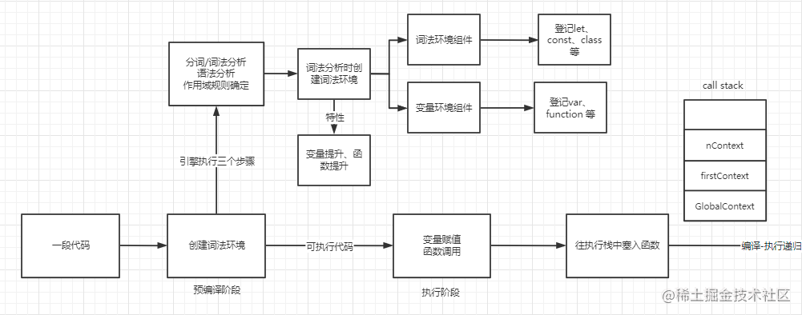

理解JavaScript中的执行上下文和执行栈
执行上下文（execution context）是当前 JavaScript 代码被解析和执行时所在环境的抽象概念， JavaScript 中运行任何的代码都是在执行上下文中运行。
# 引
我们都知道，JS代码的执行顺序总是与代码先后顺序有所差异，当先抛开异步问题你会发现就算是同步代码，它的执行也与你的预期不一致，比如：
function f1() {
console.log('听风是风');
}
f1(); //echo
function f1() {
console.log('echo');
}
f1(); //echo
2
3
4
5
6
7
8
9
按照代码书写顺序，应该先输出 听风是风，再输出 echo才对，很遗憾，两次输出均为 echo；如果我们将上述代码中的函数声明改为函数表达式，结果又不太一样：
var f1 = function () {
console.log('听风是风');
}
f1(); //听风是风
var f1 = function () {
console.log('echo');
}
f1(); //echo
2
3
4
5
6
7
8
9
这说明代码在执行前一定发生了某些微妙的变化，JS引擎究竟做了什么呢？这就不得不提JS执行上下文的了。
# 执行上下文的类型
执行上下文总共分为以下3种类型：
全局执行上下文： 只有一个，浏览器中的全局对象就是
window对象，this指向这个对象。函数执行上下文： 存在无数个，只有在函数被调用时才会被创建，每次调用函数都会创建一个新的执行上下文。
Eval 函数执行上下文： 指的是运行在 eval 函数中的代码，很少用且不建议使用。
# 执行栈
执行栈，也叫调用栈，具有LIFO（后进先出）的特点，用于存储在代码运行期间创建的所有执行上下文。
首次运行 JS 代码时，会创建一个全局执行上下文并 Push 到当前的执行栈中。每当发生函数调用，就会为该函数创建一个函数执行上下文并 Push 到当前执行栈的栈顶。
根据执行栈 LIFO 规则，当栈顶的函数运行完成后，其对应的函数执行上下文将会从执行栈中 Pop 出去，上下文控制权将移到当前执行栈的下一个执行上下文。
var a = 'Hello World!';
function first() {
console.log('Inside first function');
second();
console.log('Again inside first function');
}
function second() {
console.log('Inside second function');
}
first();
console.log('Inside Global Execution Context');
// Inside first function
// Inside second function
// Again inside first function
// Inside Global Execution Context
2
3
4
5
6
7
8
9
10
11
12
13
14
15
16
17
18
19
当上述代码在浏览器中加载时，JavaScript 引擎会创建一个全局执行上下文并且将它推入当前的执行栈。当调用 first() 函数时，JavaScript 引擎为该函数创建了一个新的执行上下文并将其推到当前执行栈的顶端。
当在 first() 函数中调用 second() 函数时，Javascript 引擎为该函数创建了一个新的执行上下文并将其推到当前执行栈的顶端。当 second() 函数执行完成后，它的执行上下文从当前执行栈中弹出，上下文控制权将移到当前执行栈的下一个执行上下文，即 first() 函数的执行上下文。
当 first() 函数执行完成后，它的执行上下文从当前执行栈中弹出，上下文控制权将移到全局执行上下文。一旦所有代码执行完毕，Javascript 引擎把全局执行上下文从执行栈中移除。
# 执行上下文的创建
执行上下文分两个阶段创建：1) 创建阶段； 2) 执行阶段
# 创建阶段
- 1、 确定 this 的值，也被成为 This Binding。
- 2、 LexicalEnvironment （词法环境） 组件被创建。
- 3、 VariableEnvironment （变量环境） 组件被创建。
直接看伪代码可能更加直观：
// 伪代码
ExecutionContext = {
ThisBinding = <this value>, // 确定 this
LexicalEnvironment = {...}, // 词法环境
VariableEnvironment = {...}, // 语法环境
}
2
3
4
5
6
# This Binding
全局执行上下文中，
this的值指向全局对象，在浏览器中this的值指向window对象，在nodejs中指向这个文件的module对象。函数执行上下文中，
this的值取决于函数的调用方式，具体有：默认绑定、隐式绑定、显示绑定（硬绑定）、new绑定、箭头函数，具体内容会在 this全面解析 部分详解。
# 词法环境（Lexical Environment）
官网 ES6 (opens new window) 文档将词法环境定义为：
词法环境是一种规范类型，基于 ECMAScript 代码的词法嵌套结构来定义标识符与特定变量和函数的关联关系。词法环境由环境记录（environment record）和可能为空引用（null）的外部词法环境组成。
词法环境有两个部分组成：
- 环境记录：存储变量和函数声明的实际位置
- 对外部环境的引用：可以访问其外部词法环境
词法环境有两种类型：
- 全局环境：是一个没有外部环境的词法环境，其外部环境引用为
null。拥有一个全局对象（window 对象）及其关联的方法和属性（例如数组方法）以及任何用户定义的全局变量，this的值指向这个全局对象。
- 全局环境：是一个没有外部环境的词法环境，其外部环境引用为
- 函数环境：用户在函数中定义的变量被存储在环境记录中，包含了
arguments对象。对外部环境的引用可以是全局环境，也可以是包含内部函数的外部函数环境。
- 函数环境：用户在函数中定义的变量被存储在环境记录中，包含了
环境记录同样有两种类型（如下所示）：
- 声明性环境记录：存储变量、函数和参数。一个函数环境包含声明性环境记录。
- 对象环境记录：用于定义在全局执行上下文中出现的变量和函数的关联。全局环境包含对象环境记录。
抽象地说，词法环境在伪代码中看起来像这样：
// 伪代码
GlobalExectionContext = {
LexicalEnvironment: {
EnvironmentRecord: {
Type: "Object" // 对象式环境记录，用于全局上下文中，主要用于记录全局的对象，函数和变量
},
outer: <null> // 对外部环境的引用
}
}
FunctionExectionContext = {
LexicalEnvironment: {
EnvironmentRecord: {
Type: "Declarative" // 声明式环境记录主要用在函数上下文中，包含变量、函数和 arguments 对象
},
outer: <Global or outer function environment refrence>
}
}
2
3
4
5
6
7
8
9
10
11
12
13
14
15
16
17
18
# 变量环境（Variable Environment）
变量环境也是一个词法环境，因此它拥有上面定义的词法环境的所有属性。
在 ES6 中，词法环境和变量环境的区别在于前者用于存储函数声明和变量（let 和 const）绑定，而后者仅用于存储变量（var）绑定。
使用例子进行介绍：
let a = 20;
const b = 30;
var c;
function multiply(e, f) {
var g = 20;
return e * f * g;
}
c = multiply(20, 30);
2
3
4
5
6
7
8
9
10
执行上下文如下所示：
// 伪代码
GlobalExectionContext = {
ThisBinding: <Global Object>,
LexicalEnvironment: {
EnvironmentRecord: {
Type: "Object",
// let、const定义的标识符以及arguments和函数声明绑定在这里
a: < uninitialized >,
b: < uninitialized >,
multiply: < func >
},
outer: <null>
},
VariableEnvironment: {
EnvironmentRecord: {
Type: "Object",
// var 定义的标识符绑定在这里
c: undefined
},
outer: <null>
}
}
FunctionExectionContext = {
ThisBinding: <Global Object>,
LexicalEnvironment: {
EnvironmentRecord: {
Type: "Declarative",
// let、const定义的标识符以及arguments和函数声明绑定在这里
Arguments: {0: 20, 1: 30, length: 2}
},
outer: <GlobalLexicalEnvironment>
},
VariableEnvironment: {
EnvironmentRecord: {
Type: "Declarative",
// var 定义的标识符绑定在这里
g: undefined
},
outer: <GlobalLexicalEnvironment>
}
}
2
3
4
5
6
7
8
9
10
11
12
13
14
15
16
17
18
19
20
21
22
23
24
25
26
27
28
29
30
31
32
33
34
35
36
37
38
39
40
41
42
43
44
45
46
可以看到 let 声明的变量在创建过程中是未初始化的，而 var 声明的变量是 undefined，这也就是为什么在 var 之前访问变量会输出 undefined，而 let 会报错。这其实就是 var 变量提升 和 let 的TDZ（临时性死区），并且函数的变量提升优先级高，因此会出现变量覆盖，另外函数表达式并不会提升。
# 执行阶段
在此阶段，完成对所有变量的分配，最后执行代码。
注： 在执行阶段，如果 Javascript 引擎在源代码中声明的实际位置找不到 let 变量的值，那么将为其分配 undefined 值。
# 图示
# 总结
执行上下文类型分为全局执行上下文、函数执行上下文和eval执行上下文。执行上下文分为创建阶段和执行阶段。执行上下文创建阶段包含三个步骤：1.绑定this。2.创建词法环境。3.创建变量环境。词法环境主要由环境记录与外部词法环境两个部分组成，全局上下文与函数上下文的外部环境引入记录不一样，全局为null，函数为全局环境或者其它函数环境。环境记录也不一样，全局叫对象环境记录，函数叫声明性环境记录。
ES3 之前的变量对象与活动对象的概念在 ES5 之后由词法环境，变量环境来解释。